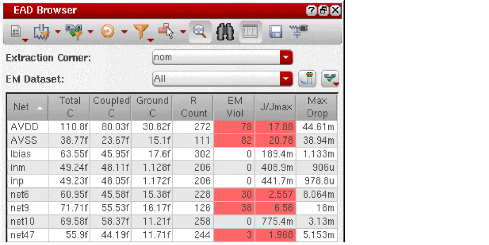
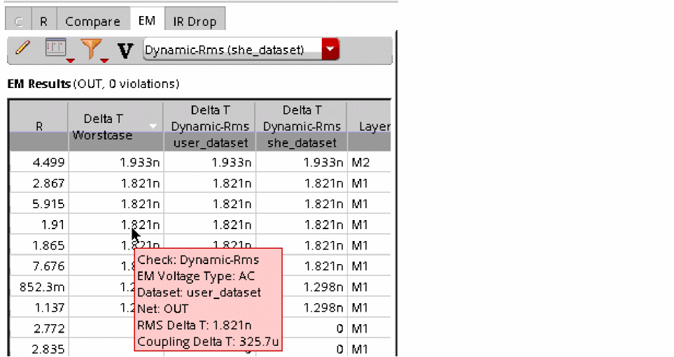
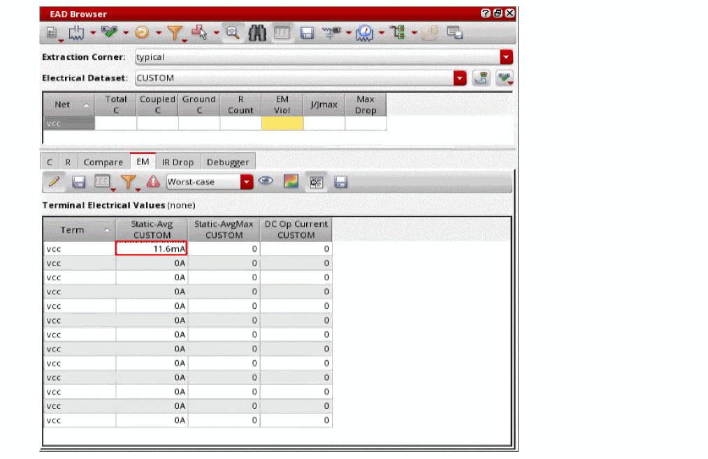

5
Performing Electromigration Checks and Fixing Violations
This section describes the electromigration (EM) checking capabilities in Layout EAD.
Electromigration is a general term used to describe failure mechanisms in the metal wires of a chip caused by the movement of metal atoms in a wire because of high current stress. As electrons move through a metal wire, they collide with the atoms in that wire. These collisions cause wires to become heated and, if enough electrons collide with a metal atom over a period of time, the metal atom can move in the direction of the electron flow, potentially creating
- An open circuit if the wire breaks
- A short to an adjacent metal wire if enough atoms move to the same location
EM checking is performed to analyze the power grid and signals of the design for any density violations of the DC and AC current through the metal conductor lines, vias, and contacts. These violations can then be corrected by limiting current density in the affected areas of the design.
- Run EM checks
- Analyze the results and identify violations in the EAD Browser
- Highlight problem areas and display detailed EAD-related information in the layout canvas
You can then edit your design directly in the layout window to address the issues found and rerun the analysis either automatically or on-demand to ensure that the problems were resolved.
This section covers the following topics:
- Running EM Analysis to Identify Violations
- Viewing EM Information in the EAD Browser
- Viewing Electrical Information in the Layout Window
- Highlighting and Fixing Violations in the Layout Window
- Fixing Violations Using EM Driven Trunk Optimization (ICADVM20.1 Only)
- Running EM Analysis on Power Grids (ICADVM20.1 ONLY)
Running EM Analysis to Identify Violations
Layout EAD uses the electrical data produced by simulation in ADE Assembler and the parasitic information extracted from the layout view to analyze your design against the EM checks you have enabled and highlight any EM issue that exist.
This section describes the settings you need to make before running the EM check, how to run the EM check itself, and how to run an EM check when there is no simulation data available from ADE Assembler.
Verifying the Setup for EM Analysis
Use the Extraction Corner and EM Dataset fields at the top of the EAD Browser to specify the corner for which results are to be displayed and the dataset to be used to run the EM checks and display results.
You can also update the electrical data from ADE Assembler and enable or disable specific checks for the selected dataset.
-
Choose the Extraction Corner for which you want to display results from the drop-down list.
You define these extraction corners during EAD Setup in ADE Assembler. See Setting up Testbenches and Corners for more information.
Each corner must also be mapped to an ICT file containing the required process information. See the EAD Process Settings – Corners tab for more information. -
Choose the EM Dataset to be used for the EM check.
- The default is All, which specifies that EM results are reported for all available datasets.
- You can limit the results to a particular dataset by choosing that dataset from the drop-down list.
- The CUSTOM dataset is a special dataset that lets you enter current values manually in cases where there is no current data available from ADE Assembler or if you want to enter your own currents in order to perform a what-if analysis. See Running EM Checks on a CUSTOM Dataset for more information.
-
Use the Update with latest electrical data button to reload the electrical data for the datasets that have changed in ADE Assembler since the datasets were last transferred to the layout.
Use this if you have updated or created new datasets in ADE Assembler. -
Use the Select EM checks drop down to enable or disable all or selected checks for the selected datasets.
The check boxes for the Dynamic-Peak and Dynamic-RMS checks are enabled only when the Dynamic Analysis check box on the EM tab of the EAD Options form is checked.
The following table describes the available EM checks, the type of current that is checked and the EM rule that is applied for each check.
EM Check Type of Current Used EM Rule Applied in the Check Peak current flowing through the resistor for the specified time of Transient Analysis. You can specify time in the Dynamic Analysis section on the EM tab of the Layout EAD Options form.
From ICT File:
em_jmax_ac_peakFrom emDataFile:
ACpeakCurrentDensSpecListorpeakCurrentDensSpecListRms current flowing through the resistor for the specified time of Transient Analysis. You can specify time in the Dynamic Analysis section on the EM tab of the Layout EAD Options form.
Layout EAD does not support theIf any dataset has been deleted from the constraints view, its name will appear in the strikethrough font style. You can remove such datasets from this list by using the Delete Electrical Data command on the EAD toolbar.avgAbsCurrentDensSpecList,userDefinedCurrentDensSpecList, andDCrmsCurrentDensSpecListEM rules fromemDataFile.
Running an EM Check
You run the EM check using the Run EM Check button in the EAD Browser toolbar.
Click once to run the EM check for the selected extraction corner based on the values in the selected datasets and the parasitics extracted from the layout view. If there are no datasets available, you are prompted to load them from the schematic.
Click the drop-down arrow to see the additional commands listed in the table below:
To run an EM check and view the results in the EAD Browser,
-
Click the Run EM Check button in the EAD Browser toolbar.
Layout EAD runs the check, matching EM statements in the order specified in the ICT file for the given layer, with the following exceptions:- For vias where the current direction is known, those statements with matching direction are processed first
- For single vias only, an EM statement matching a via with the keyword SINGLE will be selected over other matching statements regardless of the order
- For terminals that have multiple pins associated with them, each pin is currently treated as a voltage source (at 0V) instead of a current source
When the check is finished, EAD updates the summary table to show color-coded electromigration information for the nets in the design. The color coding is based on the settings in the Environment form.
- EM Viol shows the number of electromigration violations for each net.
- J/Jmax shows the worst case ratio of current to maximum current. A value greater than or equal to 1.0 is a violation. The higher the value, the more serious the violation.
- Max Drop shows the maximum IR drop between two terminals on the net.
-
Right-click in one of the cells to open the context menu.
The commands here let you perform the following actions for the selected net:- Update parasitic information and EM data
- Re-extract the parasitics and rerun the EM check (either separately or with a single click)
- Enable the high precision C and R extraction, which creates constraints to extract capacitance and resistance values with a higher degree of accuracy. See Running EM Checks with High Precision R and C Extraction for more information on high precision R and C extraction.
-
Click one of the EM table cells in the summary pane to open the EM tab in the Detail Pane.
See Viewing EM Information in the EAD Browser for more information.By default, the EM results are not saved when you save the layout view. To ensure that the EM results are saved into the OA database when you save the layout, set the writeEMResultsToOA environment variable totbefore running the EM checks. If the results are saved into the OA database, next time when you open the layout view, the EM results will be displayed in the Summary pane of the EAD Browser.
Related Environment Variables
Running EM Checks with High Precision R and C Extraction
For critical nets, you can perform high precision R and C extraction to get the detailed resistance or capacitance data that can be used to further perform EM checks for those nets. Therefore, before performing high precision R extraction, set the resistanceMeshFileName and resistanceFieldFileName environment variables to save the resistance mesh and field data in binary files. Later, you can use this saved data to run EM checks and to overlay this data on the layout canvas and identify high current density areas and EM hot spots. If you need to extract data from multiple cellviews, you can use the hprStampDataFileName environment variable to add cell identification in formation to the names of mesh and data files.
When you perform high precision R extraction, the Highlight mesh command appears on the toolbar of the R tab displayed for that net:
In addition, the following additional commands appears on the toolbar of the EM tab displayed for that net:
You can use these commands to run EM checks for the nets.
For more details, refer to the following topics:
Viewing Current Density and Vectors
If you have performed high precision resistance analysis for a net and saved the data in binary files, you can run EM checks and overlay its current density and magnitude on the layout canvas.
To run EM checks and overlay the current density for a net, do the following:
- Click the resistance value for that net in the summary pane of the EAD Browser to open the R tab in the details pane.
- Using the current dataset drop-down list, select a dataset for which you need to view the current density.
-
On the toolbar of the EM tab, click Highlight current density.
Layout EAD runs EM checks for the net to identify the current density and overlays the data in the layout. -
Zoom in to a large level to view the current density clearly.
- You can reset the layer filter to view the current density on specific layers.
To view the current density magnitude, select Highlight current density magnitude from the drop-down menu on the toolbar of the EM tab.
Layout EAD uses highlights of different colors to mark the magnitude of current, as shown in the figure given below.
The colors at the red end represent higher current density and the colors at the blue end represent lower current density.
Viewing Voltage Drop
If you have performed high precision resistance analysis for a net and saved the data in binary files, you can run current analysis to identify the IR drop or voltage drop (in volts) for that net. By default, the tool displays an overlay as per the real voltage drop values at different points on the net. However, when you set the showVoltageDropViolation environment variable to t and provide the voltage drop tolerance data for critical nets, Layout EAD uses the reference tolerance levels to display the violation level in percentage. The violation level is the voltage drop percentage allowed by the design specification. This value is calculated as (|V - refV| / vTol ) * 100.
You can provide the voltage drop tolerance data for critical nets in one of the following two ways:
- By defining the Max Voltage Drop constraint in the Constraint Manager
-
By defining the voltage drop tolerance data in a reference file specified by using the resistanceFieldFileName environment variable. The reference file should be an ASCII text file written in the format shown below.
<netName> <layerName> <refX> <refY> <vTol> <refV>
An example reference file is shown below.
AVDD Metal3 0.8875 67.5400 0.10 2.0 AVSS Metal3 0.8875 1.0000 0.05 0.0
The above sample file defines that for the netAVDD, reference voltage is2.0 volts, reference point is atx=0.8875umandy=67.5400umon layerMetal3, and the voltage drop tolerance is+/-0.10 volts. Similarly, reference values are given for the netAVSS.If, for a critical net, the IR drop tolerance is defined using both the Max Drop constraint as well as a reference file, the tolerance value given in the constraint is used to calculate violation. If multiple constraints are defined for a net, EAD considers the constraint with the smallest IR drop tolerance to identify violations.
To view the voltage drop for a critical net for which high precision R extraction has been run, perform the following steps:
- Click the net in the summary pane of the EAD Browser.
- Open the EM tab in the detail pane.
- Using the current dataset drop-down list, select a dataset for which you need to view the voltage drop.
- In the drop-down command list on the toolbar of the EM table, click Highlight voltage drop.
The voltage drop is highlighted on that net, as shown below.
t, the voltage drop overlay shows the voltage drop level calculated by using the reference details. If no reference information was provided, the value of voltage drop is displayed.The colors at the red end represent higher voltage drop and the colors at the blue end represent lower voltage drop levels. The range of voltage drop values represented by each color are listed in the Highlight Legend displayed in the details section of the EAD Browser.
Also see:
Identifying EM Hot Spots
If you have performed high precision resistance analysis for a net and saved the data in binary files, you can run EM checks to identify the EM hot spots for that net.
Layout EAD compares J with the Jmax value specified for that net in the EM rules and calculates the EM violation (J/Jmax%). These EM violations can be overlayed on the layout canvas to identify the EM hot spots that need correction.
To run the EM checks and to overlay the EM violations for a net on the layout, do the following:
- Click the net in the summary pane to view its details in the detail pane.
- Open the EM tab in the detail pane.
- Using the current dataset drop-down list, select a dataset to use the current data.
-
Click Highlight EM Violations.
The violating EM hot spots are highlighted in different colors on the selected net in the layout. The colors correspond to the color options set in the EM Violation Highlighting section on the Environment tab of the EAD Options form.
By default, the Jmax values are taken from the EM rules specified in the eadTechFile or ICT file. However, for a quick check of potential EM violations, you can provide a custom Jmax definition file with.jmax extension. Name of the file before .jmax should be same as the name set using the resistanceFieldFileName environment variable. This custom Jmax file should be an ASCII file written in the format shown below.
<layer-name> <Jmax-value-for-the-layer>
An example Jmax file is shown below.
For layers other than those specified in the .jmax file, the Jmax values are taken from the eadTechFile or ICT file. If multiple EM rules are found for a layer, Layout EAD uses the rules with the worst or smallest Jmax value.
Running EM Checks on a CUSTOM Dataset
You can use CUSTOM datasets if you do not have access to simulated current data from ADE Assembler or if you want to perform a what-if analysis based on current values entered manually in the table. If you are trying multiple combinations of current values for nets, you can save these combinations in different user-defined datasets. These user-defined datasets can be later used to run EM checks. You can also update the electrical values in these datasets.
- Using Custom Datasets for EM Checks
- Creating User-Defined Custom Datasets
- Saving CSV Templates for User-Defined Custom Datasets
- Reloading and Updating User-Defined Custom Datasets
Using Custom Datasets for EM Checks
To use a custom dataset, do this,
-
Choose CUSTOM from the EM Dataset drop-down.
All EM information is removed from the summary and detail panes. -
Select a net in the summary pane and click Edit currents on the EM tab toolbar.
The EM table in the detail pane lists all the terminals on the selected net but with no current values set.
-
Type in current values for the terminals on the selected net.
While editing the terminal current data in this table, you can copy data from one or more rows, columns, or cells, and paste it to other rows, columns, or cells. For this, you can use theCtrl+CandCtrl+Vbindkeys. However, it is important to note that the following points with respect to copying data from selected cells in a row or column:-
You can paste the cells copied from the selected columns of a row to the same columns of other rows. For example, cells copied from columns A and B of row1 can be pasted to columns A and B of row 2 or row3. It cannot be copied to columns D and E of row 2.
Similarly, you can paste the cells copied from the selected rows of a column to the same rows of other columns. -
You can copy the selected cells either from a single row or from a single column at a time. Copying a set of cells from a combination of multiple rows and columns is not supported.
-
You can paste the cells copied from the selected columns of a row to the same columns of other rows. For example, cells copied from columns A and B of row1 can be pasted to columns A and B of row 2 or row3. It cannot be copied to columns D and E of row 2.
-
Right-click the net in the summary pane and choose Run EM Check.
Layout EAD performs the EM check based on the current values you entered and updates the summary table only for the selected net.
Creating User-Defined Custom Datasets
While performing what-if analysis, you can create user-defined datasets with the manually entered current values. These datasets can be saved later as a part of the design and then reloaded to run EM checks.
To create a user-defined dataset:
- Select CUSTOM from the EM Dataset drop-down.
- Select a net in the summary pane and click Edit currents on the EM tab toolbar.
-
Edit the electrical values in the Terminal Electrical Values table on the EM tab in the details pane of the EAD Browser.
While editing the terminal current data in this table, you can copy data from one or more rows, columns, or cells, and paste it to other rows, columns, or cells. For this, you can use theCtrl+CandCtrl+Vbindkeys. -
Select Create User-Defined dataset from the Run EM Check drop-down menu on the EAD Browser toolbar.
The Create User-Defined Dataset form is displayed.
-
In the Dataset Name field, specify the name for the custom dataset. For example,
myDataset1.You can use any alphanumeric character in a dataset name.As you have edited the current values in the details pane, you can keep the Current Source asCUSTOMandAllare reserved names that cannot be used. Also, the names of any simulation datasets saved from ADE Assembler cannot be used.Manual. For details on the different sources of current that can be used while creating a user-defined dataset, refer to Sources of Current Values for a User-Defined Dataset. - Click Apply and then click OK to complete the creation of dataset.
The electrical values that you changed for the selected nets are stored in the specified user-defined dataset.
Sources of Current Values for a User-Defined Dataset
As listed in the Current Source drop-down list of the Create User-Defined Dataset form, a user-defined dataset can get the current data from any one of the following sources:
The following sections explain these sources of current data:
You can directly enter the current values for a net in the Terminal Electrical Values table on the details pane of the EAD Browser. This method has been used in the
You can directly import the current values from the simulation results saved in a psf directory. When you choose this mode, the Directory field is displayed on the form, as shown below.
Click the browse button next to the Directory field and browse to the psf directory where the simulation results are saved. The path to the psf directory is displayed in the Directory field. Click Apply and then click OK to close this form.
The current values for the selected net are displayed in the Terminal Electrical Values table on the EM tab on the details pane.
You can edit the values in this table. The data is saved in your dataset, which can be reloaded later.
If the current values for schematic objects are available in a CSV file, you can import the data from that file to create a dataset. This option is particularly useful when either you cannot run simulations to get the electrical data in results or the electrical data saved in the simulation results is incomplete. In such cases, you can save the estimated current or voltage details in a CSV, and import the file into Layout EAD to create a user-defined custom dataset.
The CSV file must be in the following format:
#TERM_DELIMITER: /
#RESULT_TYPES(SCALE_FACTOR): Idc(<scale-factor-Idc>), Iavg(<scale-factor-Iavg>)
<inst-name>/<instance-terminal-name>, , , , <inst-name>/<instance-terminal-name>, , , , ...
Note the following points for this format:
- In the rows where the electrical data is saved, you can include or exclude placeholders for the current data depending on your requirements.
-
You need to provide the scaling factor only for those result types for which you are saving the current data in this file. For example, if you saving only the direct current data, add
Idc(<scale-factor-Idc>)in the file header. You do not need to add the scaling factor forIavg.
An example CSV file is shown below.
#TERM_DELIMITER: /
#RESULT_TYPES(SCALE_FACTOR): Idc(1)
AVDD,0.00393418 AVSS,-0.00369249 M1/B,6.88283e-11 M1/D,0.000239754 M1/G,6.14897e-11 M1/S,-0.000239754 M10/B,1.6815e-11 M10/D,-5e-05 ....
See Also: eadCreateDataSetFromSchCSV
If the current values for a net are available in a CSV file, you can import that to create a dataset. When you choose this mode, the CSV File field is displayed on the form. Click the browse button next to the CSV File field and browse to the directory where the CSV files is saved. To import multiple CSV files simultaneously, hold down the Ctrl key while you select the CSV files from which you want to import electrical data. The path to the CSV files are displayed in the CSV File field.
Click Apply and then click OK to close the form.
New columns for the newly-created dataset are added in the Terminal Electrical Values table and the current values are displayed in them, as shown below.
The current values for the nets mentioned in the CSV files are imported and displayed in the Terminal Electrical Values table. If required, you can edit the values in this table. The updated values are then saved in the your dataset.
After importing data from the CSV file, run EM checks to view EM violations.
A sample csv file is shown below.
#Current Types: "Static-Avg","DC Op Current"
#Net Name: |I0/net19
I0/|NM0:D,420uA,513.2nA
I0/|NM1:G,-14.88uA,564.4nA
I0/|PM0:D,-380.7uA,-1.078uA
I0/|PM1:G,-24.37uA,594.2pA
The first two lines in the file provide the header information. It is also possible that the source CSV file contains either one of the static average or DC Op current data for one or more nets. In that case, the current values are loaded only for the column name specified in the CSV header.
If the current values for a net are available in the results database saved for a Spectre EM/IR analysis, you can import that to create a dataset. When you choose this mode, the Directory field is displayed on the form. Click the browse button next to the Directory field and browse to the directory where the results are saved. Click Apply and then click OK to save the dataset.
Saving CSV Templates for User-Defined Custom Datasets
When you import the current information from CSV files to create custom datasets, it is important to create the CSV file in the required format. If the format is incorrect, the current information is not imported.
To ensure that the current details are written in the correct format in the CSV file, you can save template from the EAD browser and edit the current information. These templates have some pre-filled information that you can modify or complete while keeping the format unchanged.
You can save templates from EAD Browser in the following ways:
-
By saving the details of all the nets displayed in the Summary pane of the EAD Browser. For this, click Run EM Checks to open the drop-down list and choose Create CSV Template for User-Defined Dataset. Provide a file name and path for the template file in the EAD Save CSV For EM Dataset form and click OK.
A template file in the CSV format is saved, as shown in the following example:
The template file saved in this way contains the following information: -
By saving the terminal current information for the nets selected in the Summary pane. For this, perform these steps:
- In the Summary pane, select one or more nets for which you need to provide the current information.
- Click EM in the Details pane to open the EM tab.
- Click Edit currents ( ) on the EM tab toolbar to display the Terminal Electrical Values table.
- The Export electrical Data to a CSV file ( ) command is also displayed to the right of Edit currents.
- Click Export electrical Data to a CSV file.
- Provide a file name and path for the template file in the EAD Save CSV For EM Dataset form and click OK.
A template file in the CSV format is saved, as shown in the following example:
The template file saved in this way contains the following information:- A section for each net selected in the Summary pane
- Each net name is followed by the names of terminals connected to it
- A comma-separated list of current values exported from the Terminal Electrical Values table
You can save this template to dump the current details for all or a particular dataset selected in the EM Dataset drop-down list on the Summary pane.
After modifying the current details in the template files, you can use those to import details and create custom dataset by using the Create User-Defined Dataset command. For more details, refer to Creating User-Defined Custom Datasets.
Reloading and Updating User-Defined Custom Datasets
To reload a user-defined dataset for EM check:
-
Choose the name of a user-defined dataset from the EM Dataset drop-down.
All EM information is removed from the summary and detail panes. - In the summary pane, select the net for which you had saved the electrical currents and click Edit currents on the EM tab toolbar.
-
The Terminal Electrical Values table in the detail pane lists all the terminals on the selected net with the electrical values from the dataset.
Now, you can edit the current values for the same or other nets, and run EM checks. The edited values are again saved with the dataset when you save the design.
Viewing EM Information in the EAD Browser
This section describes how to analyze the results of an EM check in the EAD Browser’s Detail Pane. To do this,
-
Click one of the nets in the summary pane to open the EM tab in the detail pane.
You see a detailed breakdown of the EM violations present for the net selected in the summary pane. If there are no violations for the selected net, the table is empty.
Each row represents a resistor that was extracted in EAD. The color coding is controlled by the settings in the Environment tab.
For information on how to customize the table display, see Changing Data Display in the EAD Browser. -
Use the Result type menu to choose which values are displayed in the table.
- J/Jmax shows the ratio of current to maximum current. A value greater than or equal to 1.0 is a violation. The higher the value, the more serious the violation.
-
(J/Jmax)*W shows the ratio of current to maximum current multiplied by the resistor width. In some cases, this value can give an indication of how wide the wire would need to be in order to remove the violation.
This value is shown only for the resistors extracted from conductor layers. -
(J/Jmax)*N shows the ratio of current to maximum current multiplied by the existing number of via cuts. This gives an estimate of the number of via cuts that could possibly fix the EM violation reported for the via resistor.
This value is shown only for the resistors extracted from via layers. - Current shows the current from simulation results
- Max Current shows the maximum current that can flow through this resistor
- Percent of Max Current shows the value as a percentage of the maximum current
- Delta T shows additional columns to display the delta T results generated when the self-heating effects are enabled for electromigration, that is, when the Enable Self Heating Effects check box on the EM tab of the EAD Options form is selected. For more details on how to view delta T results on the EM tab in EAD Browser, refer to Viewing Delta T Information.
-
Use the Select layers menu to control which layers are shown in the table.
-
Use the Highlight drop-down to choose an overlay in the layout canvas for the selected net. An overlay color-codes the select net on the canvas based on the EM information available for that net. Use the Highlight Transparency slider to change the transparency of the overlay to let you see the underlying design geometry.
For more information on using overlays to highlight violations in the canvas, see Highlighting and Fixing Violations in the Layout Window. -
When Dynamic Analysis is enabled in the EM tab, you can right-click in any J/Jmax Dynamic-Peak or J/Jmax Dynamic-Rms cell and
- Choose Plot Terminal Currents to view the currents associated with the terminals of the selected net.
-
Choose Plot Resistor Currents to view the intermediate currents through the selected resistor. This menu command is available only when the preserveResistorCurrents environment variable is set to
t.
-
Change the columns shown in the EM results table by clicking the right mouse button in any column header and selecting or clearing the check box next to the information you want to show or hide.
-
Move your mouse pointer over any cell to see more information about the value shown in that cell.
For example, the terminal electrical values table shows multi-pin terminals as0volts ("0V"). This is because the terminal with multiple pins, is treated as a reference terminal and each pin is treated as a voltage source (at0V) instead of a current source. If you position the mouse pointer over the value, you see a tooltip displaying the current at the pin computed during the EM check.
In addition, when you click a terminal row in the table, the display zooms to the terminal shapes.
Similarly, if you position the mouse pointer over the length (L) value, you see a tooltip displaying the drawn length and the EM length.
EM length is the effective length used to determine which EM rule in the ICT file is to be applied. The default method for EM length calculation iscenterline, but you can change it by using the segmentLength environment variable. -
Click Export table data (
) in the EAD Browser toolbar to export the data currently displayed in the browser tables in either CSV or HTML format.
Viewing Delta T Information
When you enable the self-heating effects by setting the Enable Self Heating Effects check box on the EM tab of the
To view delta T results, do this:
-
On the EM tab, use the Result type menu to choose Delta T.The Delta T command appears in the Result type menu only when Delta T values are saved in electromigration results.Note the following changes in the EM results table displayed on the EM tab.
- The columns that displayed J/Jmax values are hidden.
-
Columns to display the delta T values are displayed in the EM results table, as shown below.
-
Two new commands are displayed in the EM tab toolbar:
- The Highlight delta T Values on Canvas and show Highlight Legend command button to display a heat map of delta T on the layout canvas
- The Electrical dataset to be used for delta T highlighting drop-down list that contains the name of electrical datasets containing delta T values
You can use these commands to highlight the delta T values on the layout canvas.
-
To view the RMS Delta T and Coupling Delta T values for the corresponding resistance, move the pointer over any cell in the Delta T columns.
The data is displayed in a tooltip, as shown below.
The cells that contain a delta T value greater than the one specified by the layoutEAD.em deltaT environment variable or the Delta T on the EM tab of EAD Options form are highlighted in red, as shown in the example given below. -
To view the delta T values highlighted on the canvas, select an electrical dataset from the drop-down list and click
 on the toolbar.
on the toolbar.
A highlight legend showing the color map to the value ranges is also displayed. -
For better analysis of the highlighted values, it is better to open the EM results table along with it. For this, click Show/Hide Delta T values in the EM Results table
on the toolbar. This command is visible only when you click
.
The EM results table are displayed and the highlight is also maintained on the canvas, as shown below.
Viewing Electrical Information in the Layout Window
EAD provides various features to let you view electrical information in the layout canvas.
Using Info Balloons
You can use the layout editor’s Show Info Balloon feature to see the details of EAD parameters when you move the mouse pointer over nets in the layout canvas. To do this,
-
From the layout window menu bar, choose Options – Dynamic Display and enable Show Info Balloon at the top of the form.
- Choose the information you want to display from the Contents pane and click OK.
-
Move your mouse pointer over a net in your design to see an info balloon containing the EM information for the highlighted segment.
The precision of the values displayed in the Info Balloon is controlled by the displaySigDigits environment variable. The default is 4 and the maximum value is 10.To change the precision, type the following in the CIW:envSetVal("layout" "displaySigDigits" 'int
integer_value) -
Move your cursor over a different net.
The original info balloon disappears and a new one opens containing information on the new net.If the calculated information for any EAD parameter is not available for a net, the Info Balloon shows the corresponding value as<undefined>. For example, you performed an R-only extraction (that is, Extraction Mode on the Extraction tab of the Layout EAD Options form is set toR), but on the Dynamic Display form, you have selected the options to display both the resistance and capacitance values. In this case, capacitance values will be displayed as<undefined>, as shown in the figure below.If you find any inconsistency between the mouse location or the information being displayed in the info balloon; for example, the current limit and J/Jmax are reported asUndefinedand0, respectively, or the values of some other object as shown; it could be because the point is getting snapped outside the bounds of the DB object while displaying the info balloon for that object. In this case, you can set either or both of the following two settings in Layout EAD:
Using Point-To-Point Info Balloons
You can use the Point-To-Point Info Balloon feature to interactively view EAD parameters for the segment between any two points in your design. Point-to-point info balloons remain visible on the canvas until you close them either individually by clicking the ‘x’ in the top-right corner or all at once using the Close All Point-To-Point Info Balloons command from the main EAD toolbar or from the EAD Browser toolbar. They are also closed automatically when you exit Layout EAD.
To show point-to-point info balloons,
-
Click Create New Point-To-Point Info Balloon from the main EAD toolbar or from the EAD Browser toolbar.
-
(Optional) Change the snapping mode for the points by pressing the
sbindkey. For more details, refer to Snapping Start and End Points to Existing Nodes.The snapping mode is also set by the P2PSnapping environment variable, which is by default set to"node". Use thesbindkey to use a snapping mode other that the one set by this variable. -
Click a start and end point on any net.
Layout EAD displays an info balloon showing the EM violation information for the net (across all datasets), the current limit for the path, the resistance value of the limiting resistor, and the total resistance of the path. The limiting resistor refers to the resistor in the point-to-point path that can carry the least amount of current as reported by the current limit information on the info balloon. The title of the info balloon displays a summary of this information, which includes the current limit, point to point path resistance, and the resistance value of the limiting resistor (in parenthesis).
Layout EAD also highlights in red the first segment of the net that contains the first limiting resistor.
Important Points to Note
-
If the from and to points of an info balloon are within
+/- DBUPerUU/10, Layout EAD considers them as the same point and therefore, the path resistance value is0. -
While you are dragging mouse from the first point to the second point, if the updateP2POnDrag environment variable to
t, the resistance details are dynamically updated to show the resistance up to the current location of mouse. In case of large nets, frequent dynamic updates might make the info balloon look unresponsive because the tool is taking time to calculate the resistance values from the first point to the current location. Therefore, it is recommended to delay the update frequency by changing the value of the clickClickUpdateDelay environment variable from the default value (0.05) to a higher value. -
If you do not want to update the info balloons while you are dragging the mouse from the first point to the second, set the updateP2POnDrag environment variable to
nil. -
If the layout contains mosaic instances corresponding to the instances in the schematic, you need to convert those mosaic instances to regular instances so that the resistance can be extracted from the paths connected to them and added to the R value on the point-to-point info balloon. However, if the mosaic instances are only routing shapes and do not correspond to any instance in the schematic, you can press the
Ctrl + Nbindkey after selecting the first point for the info balloon to find the nets connected to them and extract resistance. -
By default, Layout EAD processes and extracts all the shapes present on a net while you select points for point-to-point info balloons. However, when the number of shapes on a net is large, this can impact performance. In such a case, you can set the clickClickUseNetCache environment variable to
nil.
Snapping Start and End Points to Existing Nodes
When you select points for info balloons, Layout EAD inserts user nodes at the nodes closest to the selected points and re-extracts parasitics. As re-extraction takes time, you can choose to snap the points to the existing nodes or terminals on the same net and reuse the already extracted data. This helps in improving the performance of the point-to-point info balloon display command by avoiding an additional extraction.
By default, snapping is off and the points selected by the user are considered as the start and end point for an info balloon. You can use any one of the following two snapping modes:
-
Snap to closest node: In this mode, the start and end points are snapped to the closest nodes, and resistance between those nodes is shown. -
Snap to closest terminal: In this mode, the start and end points are snapped to the closest terminals, and resistance between those terminals is shown.
To switch between the snapping modes in s bindkey.
The following figures show how the end points for an info balloon change for different snapping modes:
Info balloon with snapping off
Info balloon with snapping to the closest node
Info balloon with snapping to the closest terminal
Displaying Info Balloons with Start and End Points from Different Layers
While selecting the start and end points for info balloons, press the l key to traverse through the overlapping interconnect layers. The name of the current layer is displayed on the info balloon to help you choose the correct layer. The CIW also shows the target layer name. This helps in selecting two points across different layers to view the electrical information.
Displaying Resistance Paths Between the Start and End Points of an Info Balloon
You can use the displayP2PResistancePath environment variable to specify your requirements to display resistance paths between the start and end points of an info balloon. The resistance paths are displayed in addition to the halo that highlights the path between the selected points.
By default, this variable is set to "none" and EAD does not show any resistance path. Set it to "singlePath" to show the shortest path containing the limiting resistance, between the two points, as shown below.
If you want to display all the resistance paths between the points, as shown below, set the variable to "allPaths".
If you do not want to display resistance paths, set this variable to "none".
Updating Info Balloons to Reflect Layout Edits
You can edit any segment between the two points directly on the layout canvas. You can set the update mode to specify whether to update the information on an info balloons as per the layout changes.
- If Automatic Update Mode is set, EAD automatically updates the layout overlay as well as the information shown in the balloon.
-
If Manual Update Mode is set, you must click the Update Parasitics & EM button on either of the EAD toolbars (or press
Ctrl+u) to update the display and information shown in the info balloon.
Saving Info Balloons to XML Files
You can use the Save All Point-to-Point Info Balloons command from the EAD toolbar to save the displayed info balloons in an XML file. This helps in saving the details of critical nets that you identified and would need to mark again while reviewing the design.
To save the info-balloons already displayed on the layout canvas, choose Save Point-to-Point Info Balloons from the EAD toolbar. The Save Point-to-Point Info Balloons form is displayed. Specify the location and name for the XML file in which you want to save the info balloons, and click Save.
To load the saved info balloons, choose Load Point-to-Point Info Balloons from the EAD toolbar. The Load Point-to-Point Info Balloons form is displayed. Specify the XML file and clock Load. The info balloons are displayed at their original locations. The titles of info balloons loaded from the saved XML file are marked with a *. If the design is changed after saving the info balloons, their title is highlighted with a yellow background to indicate that they are not up-to-date. In this case, you need to click Update Parasitics & EM on the EAD Browser toolbar to update the display in information on the info balloon. However, If Automatic Update Mode is set, EAD updates the info balloons whenever a design is changed.
Using Measurement Display
Use the layout editor’s Measurement Display On feature to see real-time current information while you are routing your design, for example, using the Create Wire command. To do this,
-
Choose Options – Dynamic Display to open the Dynamic Display form and enable Measurement Display On at the top of the form.
-
Enable the EM-related information you want to see; for example, Resistance, CurrentLimit, and EMData as shown above.
During Create Wire, you now see the real-time information about the resistance and current limit of the wire being drawn, along with the number of EM violations being generated as you draw the net.
Highlighting and Fixing Violations in the Layout Window
To see a visual representation of the EM violations for a selected net in the layout window,
-
Dim the display using the Dim button in the Options toolbar on the VLS XL window.
This dims the display of the cellview components making it easier to see the overlay in the canvas. -
Use the Highlight Worst-Case Violations for All Nets button in the main EAD toolbar to see the worst case violations in the canvas.
The worst case violations for all nets are highlighted.
-
To analyze the violations for a specific net in more detail, go to the EM tab and choose an overlay to apply in the layout canvas.
-
Select a net in the summary table to highlight the violations on that net in the layout canvas.
The layout editor display automatically pans and zooms to the area of the design in question.
The color-coding used for the overlay is based on the settings in the Environment form. -
Use the Highlight Transparency slider to change the transparency of the overlay highlighting.
The default is 30%. You can change this using the violationTransparency environment variable.
Slide towards the ‘+’ sign to increase the transparency and see more of the underlying geometry.
-
Switch on Automatic Update Mode so that parasitic and EM information is updated automatically as you edit your design in the canvas.
-
Select a net segment with an EM violation and perform some interactive edits to resolve the issues. For example:
- Use Edit – Basic – Properties to open the Edit Properties form and widen the wire
- Stretch or Move individual segments to better balance the current flowing through them
- Use Create Wire to change the way the net is routed or connected to neighboring components
With each change you make, EAD re-extracts parasitics for the changed net in real time and reruns the EM check. The color of the net changes in the layout window to reflect the status of any remaining violations on the net. -
When you have finished fixing violations, use File – Save to save the partial layout.
The parasitic information for the design is updated and saved in the layout view, which can be used to rerun simulations in ADE Assembler to check if the specifications are still met.
For more information, see Resimulating Designs with Extracted Parasitics.
Fixing Violations Using EM Driven Trunk Optimization (ICADVM20.1 Only)
EM Trunk Optimization is an automatic post-route EM-driven Pin to Trunk optimization feature. This feature automatically extracts the hint data generated by EAD and uses it to fix the EM violations on trunks, twigs, and vias of a completely routed net. The EM Trunk Optimization feature lets you quickly resize trunks to meet EM requirements. The extent of EM Trunk Optimization is controlled by selecting trunks or nets in the design. If no trunk or net is selected, then all the trunks in the design are optimized at once.
EAD analyzes the design and calculates hints that are used by EM Trunk Optimization to resize the trunk. Pin to Trunk routing is required to create the trunks. EM Trunk Optimization only works on trunks that were created by the Pin to Trunk Router.
The Layout EAD toolbar has the following buttons for automatic EM-driven Pin to Trunk optimization:
Starts the Optimize Trunk Width for Complete Network feature. Click the drop-down arrow to see the EM optimization modes listed in the table below.
| Command | Let’s you |
|
Expand the width of trunks and increases the number of cuts in via arrays according to the hints provided by EAD. |
|
|
Reduce the width of the oversized trunks and the number of cuts of oversized via arrays. |
|
|
Display the P2T EM Optimization form. For more information about the options in this form, see P2T EM Optimization (ICADVM20.1 Only). |

Selects the style of optimizing a trunk. Click the drop-down arrow to see the styles for optimizing a trunk to resolve EM violations.
| Command | Lets you... |
Enables trunk tapering during trunk widening. This button turns on or off trunk tapering. By default, trunk tapering is off. Click the button to turn on trunk tapering.
Important Point to Note
When no net is selected on the layout canvas or in the Navigator Assistant, the EM trunk optimization is applied to all the nets. However, when one or more nets are selected in the layout canvas or in the Navigator Assistant, the EM trunk optimization is applied only to the selected nets.
Optimizing EM Driven Trunks
This section describes the various ways in which you can optimize trunks to fix the EM violations in your design.
Expanding Trunks to Fix EM Violations
This section covers how the width of the trunks are expanded and the cuts of vias are increased according to the hint values provided by EAD. You will also see how the width of a trunk is expanded according to the trunk optimization style that is selected.
- Choose a dataset from the EM Dataset drop-down list.
- Click the Extract Parasitics button in the EAD toolbar.
- Click the Run EM Check button in the EAD toolbar.
- Click Highlight Worst-Case Violations for All Nets to view and highlight the violations in the layout canvas.
-
Select a net in the summary table to highlight the violations on that net in the layout canvas. You will see a detailed breakdown of the EM violations present for the net selected in the summary pane. If there are no violations for the selected net, the table is empty.
- Click the Select Trunk Optimization Style button in the EAD toolbar. You can select the trunk optimization style as: Widen - No Stranding, Parallel Stranding, and Stacked Stranding. The result of trunk optimization varies depending upon the trunk optimization style that is selected. To see how the trunk optimization varies depending on the selected trunk optimization style, see Expand with Widen - No Stranding, Expand with Parallel Stranding, and Expand with Stacked Stranding.
- Click the Optimize Trunk Width for Complete Network button with the default option of Expand to Fix EM Violations.
Expand with Widen - No Stranding
When the trunk optimization style is selected as Widen - No Stranding, the width of the trunk is widened according to the width hint value provided by EAD. If the widened trunk is too close to the neighboring trunks, the neighboring trunks are pushed away to meet the spacing requirement.
-
Click the Select Trunk Optimization Style button in the EAD toolbar and select Widen - No Stranding.
-
Click the Optimize Trunk Width for Complete Network (
 ) button with the default option of Expand to Fix EM Violations. As a result, the top trunk is widened. However, the bottom trunk is not completely widened to avoid DRC spacing violations. The EM violations on the bottom trunk and twigs are highlighted in orange.
) button with the default option of Expand to Fix EM Violations. As a result, the top trunk is widened. However, the bottom trunk is not completely widened to avoid DRC spacing violations. The EM violations on the bottom trunk and twigs are highlighted in orange.
-
To fix the remaining EM violations in the design, click Options from the Optimize Trunk Width for Complete Network drop-down list.
-
The P2T EM Optimization form is displayed. From this dialog box, select Stack Twigs and Prefer DRC Violations to EM Violations options.
When there is insufficient space for a trunk to expand, the trunk is expanded depending on the setting of the Prefer DRC Violations to EM violations option. By default, the Prefer DRC violations to EM Violations option is deselected. In such a case, the width of the trunk is expanded to a value less than the hint value provided by the EAD analysis engine to keep the layout DRC-error free. When the Prefer DRC Violations to EM Violations option is selected, the width of the trunk is expanded according to the hint value generated by EAD, leaving a short or a spacing violation between the widened trunk and a neighboring shape. -
Click the Optimize Trunk Width for Complete Network button. The following figure shows that there are no more EM violations. All the violations on the twigs and the bottom trunk are resolved. The following figure displays the result of how the trunks are resized in such a case.
Expand with Parallel Stranding
When the trunk optimization style is selected as Parallel Stranding, the number of strands are calculated based on the hint width provided by EAD divided by the original width of the trunk. The final number of strands are then rounded up to the nearest integer. Also, the strands are arranged in parallel on the same layer. The length of each strand is identical to the length of the original trunk. In addition, vias are added between each strand and all intersecting segments. The adjacent trunks parallel to the strands are pushed away to avoid shorts and the spacing violations.
-
Click the Select Trunk Optimization Style button in the EAD toolbar and select Parallel Stranding.
-
Click the Optimize Trunk Width for Complete Network (
) button with the default option of Expand to Fix EM Violations. As a result, additional trunks are added and the EM violations on the selected net are fixed, as shown in the following figure.
In case the original trunk is on a track pattern of WSP, the parallel strands are snapped to adjacent tracks. The width of each strand is identical to the width of the original trunk or WSP track width.
- To fix the remaining EM violations in the design, click Options from the Optimize Trunk Width for Complete Network drop-down list.
-
The P2T EM Optimization form is displayed. From this form, select Stack Twigs and Prefer DRC Violations to EM Violations options. For more information on why should you select stack twigs, see Stacking Twigs to Fix EM Violations.
When there is insufficient space for all the strands to adjust, the number of strands are adjusted depending on the setting of the Prefer DRC Violations to EM violations option. By default, the Prefer DRC violations to EM Violations option is deselected. In such a case, the number of strands are reduced to keep the layout DRC-error free. When the Prefer DRC Violations to EM Violations option is selected, the inserted number of strands are kept as is, leaving shorts and spacing violations with neighboring shapes. -
Click the Optimize Trunk Width for Complete Network button. The following figure shows how the number of strands are adjusted to fix the remaining EM violations.
Expand with Stacked Stranding
When the trunk optimization style is selected as Stacked Stranding, the EM violations are fixed by creating additional trunks on the layers above or below the original trunk layer.
Stacking starts from the first layer above the original layer in the same routing direction and stops when the total width of the stacked strands is equal to or greater than the width of the hint value provided by EAD. Also, the width of each strand is equal to the width of the original trunk or the minWidth of the layer of the strand, whichever is larger. The length of each strand is equal to the length of the original trunk. In addition, the strands are connected together by the new via stacks that get added at the locations of existing vias on the original trunks.
-
Click the Select Trunk Optimization Style button in the EAD toolbar and select Stacked Stranding.
-
Click the Optimize Trunk Width for Complete Network (
) button with the default option of Expand to Fix EM Violations. If the top-most layer is attained and total width of the strands is still less than the hint width value provided by EAD, additional strands are added to layers below the original layer.
By default, stacking in each layer is skipped if an obstacle is found at the location of the original trunk. If there is a WSP on a layer but there is no track at the location of the original trunk, the new trunk is snapped to the nearest WSP track. However, if the track does not yield a feasible solution, the command skips the layer and proceeds to the next layer.
To ensure that the stranded trunks are placed on tracks in a design that consists WSPs, selectWhen the original trunk is connected to a top-level pin shape, additional pin shapes are created to which the new strands are connected.Snap Patternfrom the Snap Wires To drop-down list in the Wire Assistant, before clicking Optimize Trunk Width for Complete Network.
-
Next, click Options from the Optimize Trunk Width for Complete Network drop-down list.
- The P2T EM Optimization form is displayed. To continue stacking until the total width of the trunk satisfies the width hint value provided by EAD, select Prefer DRC Violations to EM Violations option from the form.
-
While the trunks are stacked, you can fill the stacked trunks with vias for fixing violations. To do this, select the Fill Stacked Trunks with Vias option from the P2T EM Optimization form.
-
Click the Optimize Trunk Width for Complete Network button. In the following figure, you can see that vertical stacked strands are created on
Metal5andMetal7because these layers have a vertical routing direction and a horizontal stacked strand is created onMetal6layer because it has a horizontal layer direction.
Stacking Twigs to Fix EM Violations
This section describes how to fix the EM violations that exist due to the twigs. It also describes how a trunk is widened and how the twigs are stacked to fix the EM violations. To do this:
- Select a net in the summary table to highlight the violations on that net in the layout canvas.
- From the drop-down list, click Options. The P2T EM Optimization form displays.
-
Select the Stack Twigs option from the form.
When the Stack Twigs option is selected, stacked stranding is performed on each twig segment with an EM violation. The stacking of twigs is similar to that of the trunk stacked stranding except that the stacking of twig segments starts from the first layer below the layer of the original twig segment. The layer for stack follows the routing direction of the original twig segment. In addition, vias are added to stitch the stacked segments together.
-
In the EAD toolbar, click the Optimize Trunk Width for Complete Network (
) button. The following figure displays how all the violations on the twigs and trunks were resolved.
Tapering of Trunks to Fix EM Violations
This section describes how to taper down the width of the trunks when expanding trunks to fix EM violations.
- Select a net in the summary table to highlight the violations on that net in the layout canvas.
- In the EAD toolbar, click the Toggle Trunk Tapering for Complete Network button. When trunk Tapering is enabled, the original trunk is split into multiple trunks. The trunk splitting occurs at each twig or trunk intersection.
- Click the Optimize Trunk Width for Complete Network button.
The width of the individual trunks are widened separately according to EAD hints and vias between the splitted trunks are also accordingly adjusted. The tapered trunks are aligned along their centerline. However, the centerline alignment may not be possible if the tapered trunks are pushed as a result of a neighboring trunk being expanded. In such a case, each trunk in a pair of adjacent trunks is allowed to slide up and down to provide space to the neighbor trunk above or below the tapered trunk. The common edge between the adjacent tapered trunks remains equal to the size of the narrower trunks. The following figure shows an example of how the trunks are tapered during trunk optimization.
Shrinking Oversized Trunks
This section covers how the width of the oversized trunks and the number of cuts in oversized via arrays in the design are reduced according to the hint values provided by EAD.
- Select a net in the summary table to highlight the violations on that net in the layout canvas.
- In the EAD toolbar, click the Optimize Trunk Width for Complete Network button.
- From the drop-down list, select the Shrink Oversized Trunks command. When this command is run, the width of the oversized trunk is reduced and the cuts of the vias on the trunk are also reduced. It does not reduce the number of strands. Also, no compaction is done after width of trunks is reduced and the width of twigs is not reduced.
Here, you can see an example where the wide top trunk that was oversized for the defined EM rules is reduced to the ideal width to meet the EM rules.
- Now, to taper down the width of the optimized trunk, click the Trunk Tapering for Complete Network button.
-
Again, click the Optimize Trunk Width for Complete Network button in the EAD toolbar. The following figure displays tapering of the optimized trunk.
Shrinking and Expanding Trunks
This section covers how the width of the oversized trunks can be reduced and at the same time the width of the undersized trunks can be expanded using a single command. To do this:
- Select a net in the summary table to highlight the violations on that net in the layout canvas.
- In the EAD toolbar, click the Optimize Trunk Width for Complete Network button.
- From the drop-down list, select Shrink and Expand command. This is an ideal command to run if you want to both reduce the width of the oversized trunks and widen the trunks that violate the EM rules. When you select this command, two actions take place :
For more information on these commands, see Expanding Trunks to Fix EM Violations and Shrinking Oversized Trunks.
In the following figure, you can see that the width of the oversized trunk is reduced to the ideal width. At the same time, the other trunks were widened.
Related Topics
P2T EM Optimization (ICADVM20.1 Only)
Running EM Analysis on Power Grids (ICADVM20.1 ONLY)
EAD enables you to check the power grids by running EM analysis for the specified source current even when there are no devices connected to the grid.
EAD does so by inserting dummy instances as the current sink points at the via that is connected to the lowest metal layers. It then creates a dataset using the specified source current, which is distributed among the sink points in proportion to the number of via cuts at these sink points. This dataset is used to run EM analysis.
The results of EM analysis show the reported violations and the recommendations to fix these violations. You can then make the suggested modifications in the original grid so that it becomes EM-compliant.
However, if you do not want to modify the original grid without first analyzing the effects of these modifications, you can choose to run the analysis on a scratch cellview, which is a copy of the original grid. You can then modify the grid in the scratch cellview to resolve the EM violations. After validating the fixes, you can copy these modifications from the scratch cellview to the original grid.
The following workflow shows how to run the EM checks on power grids:
Prerequisites
Before running EM analysis, ensure that:
- The layout view of your design is open. See Virtuoso Electrically Aware Design Flow Guide for more information.
- The EAD Browser is initialized and the process setup is loaded. See Virtuoso Electrically Aware Design Flow Guide for more information.
- The Source current is specified. See the Specifying the Source Current section for more information.
Specifying the Source Current
To run EM analysis on a power grid, you can specify the source current by using one of the following methods:
You can then run EM analysis either on the scratch cellview or on the original grid.
See the following sections for more information:
Using EAD Menu
To specify the source current for a net using EAD menu, do the following:
- Right-click the net in the layout canvas, and then choose EAD – Specify source current for net.
- In the Current (Ampere) field on the form that appears next, specify the value of the source current.
- Click OK.
Using the defaultCurrent Environment Variable
Specify the source current by setting the defaultCurrent environment variable as follows:
envSetVal("layoutEAD.em" "defaultCurrent" 'float 0.001)
Using the CUSTOM Dataset
To specify the source current using the CUSTOM dataset, do the following:
-
In the EAD Browser, from the Electrical Dataset drop-down list, select
CUSTOM. - In the summary section, select a net, and then click the EM tab.
-
Click Edit Currents on the EM tab toolbar.
The EM table lists all the terminals of the selected net. -
In the Static-Avg column, specify the value of current for which the power net needs to be analyzed.

Running EM Analysis on the Scratch Cellview
-
Right-click a net on the layout canvas, and then choose EAD – Run grid analysis on scratch cellview.
EAD creates a scratch cellview, in which dummy instances are inserted as sink points at the lowest vias present in the layout. It then creates a dataset using the specified source current, which is distributed among the sink points in proportion to the number of via cuts at these sink points. This dataset is used to run EM analysis on the scratch cellview. -
Double-click the EM Viol cell to view the results of EM analysis.
The reported EM violations are displayed in the EM table. Hover over any of the violations to view the recommended design changes in your grid so that it becomes EM-compliant.
After fixing the EM violations by modifying the grid in the scratch cellview, you can update the grid in the original layout with these modifications to make it EM-compliant for the specified source current. To upgrade the grid in the original layout, see the Modifying the Original Layout section.
Modifying the Original Layout
After resolving the EM violations by modifying the grid in the scratch cellview, you can replicate these modifications in the original grid.
To modify the grid in the original layout, do the following:
-
In the scratch cellview, right-click a net and then select EAD – Upgrade grid in original layout.
A message box appears informing you that the scratch layout will be deleted if you choose to continue. -
Click Yes to confirm.
The changes are updated in the original grid and the scratch layout is deleted.
Important Points to Note
- By default, the scratch layout is created in the same library that contains the original layout. However, you can set the scratchLib environment variable to define a different scratch library.
- After running the EM Analysis on the scratch layout and making the modifications as needed in the original layout, you can delete data from the scratch library. Use the eadDeleteScratchLib SKILL function to delete all data from the scratch library.
-
You can also set the default value of the current passing through the power grid (
VDD) that you want to be considered during EM analysis. Set the defaultCurrent environment variable to define the default current.
Running EM Analysis on the Original Grid
To run EM analysis on the original grid, do the following:
-
Right-click a net on the layout canvas, and then choose EAD – Run Supply Grid Analysis (modifies layout).
A dialog box appears informing you that the layout will be modified if you choose to continue. -
Click Yes to confirm.
EAD creates a dataset using the specified source current, which is distributed among the sink points in proportion to the number of via cuts at these sink points. This dataset is used to run EM analysis on original grid. -
Click EM Viol cell to view the results of EM analysis.
The reported EM violations are displayed in the EM table. Hover over any of the violations to view the recommended design changes in your grid so that it becomes EM-compliant. - Fix the EM violations by modifying the grid in the original layout.
Return to top